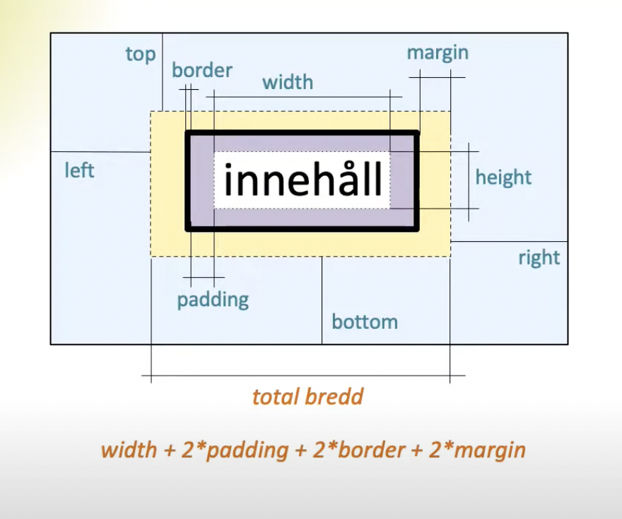

Boxmodellen
Boxmodellen och dess egenskaper
Boxmodellen är en term som beskriver hur en webbsidas layout ser ut för olika HTML-element. Med den kan man bestämma mellanrum mellan element. Boxmodellen är kortfattat en låda, eller en “box”, som omger ett HTML-element. Modellen är uppbyggd av fyra huvudsakliga egenskaper: innehåll, padding, border och margin.
Innehållet omfattar det som finns i HTML-dokumentet, såsom text, bilder och länkar. Padding avser ett tomt område som omger innehållet. Border är en gräns som omger innehåll och padding. Margin är ett område som frilägger yta omkring border.
Skillnaden mellan content-box och border-box
Inom egenskapen box-sizing är content-box standardinställningen. Content-box avser width och height av boxens självaste innehåll, utan att ta med padding eller border. Å andra sidan avser border-box inte bara innehållet utan även padding och border.
